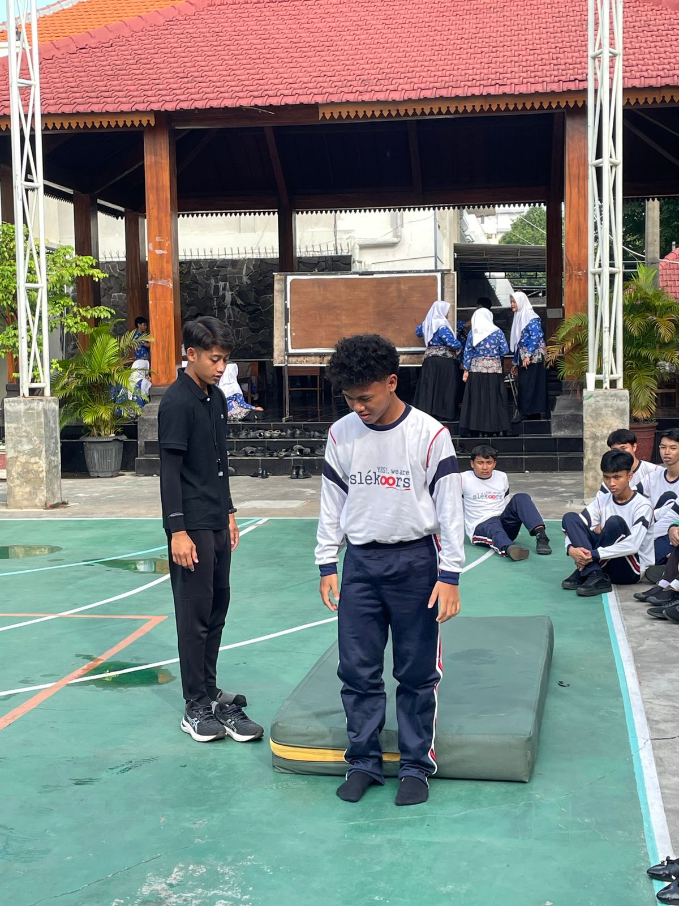
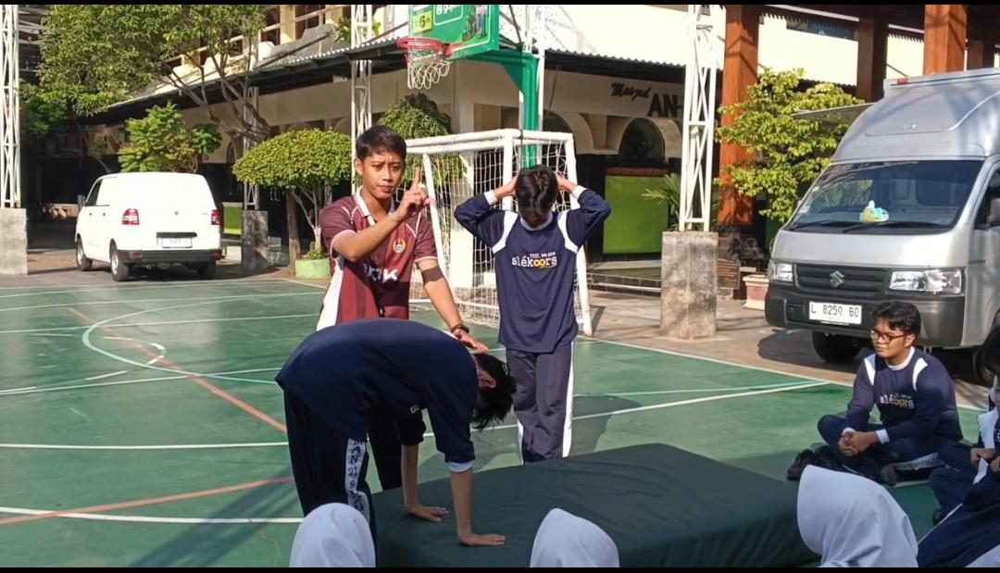
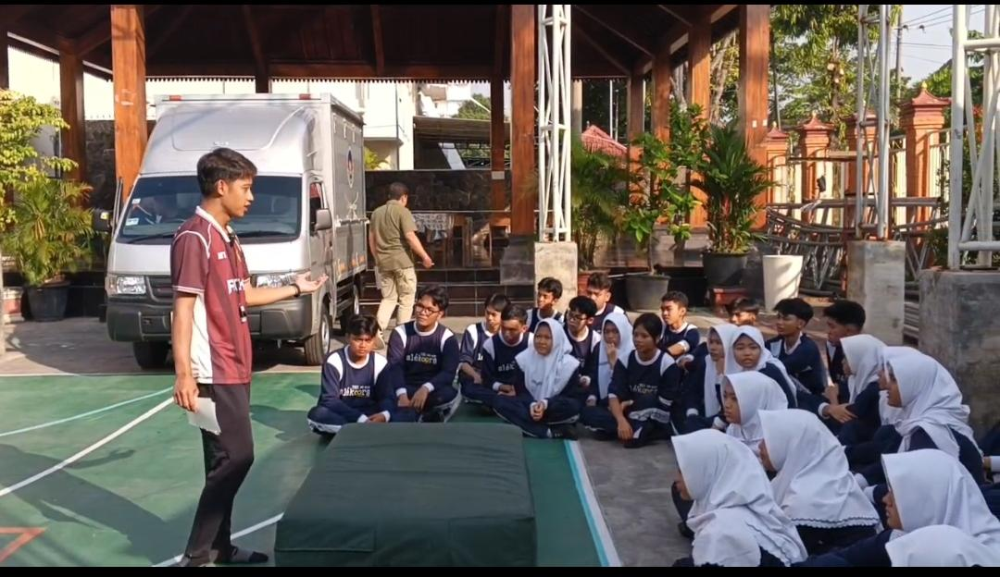
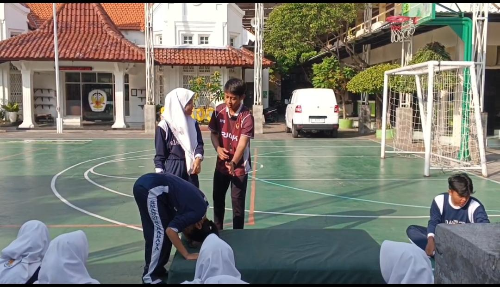
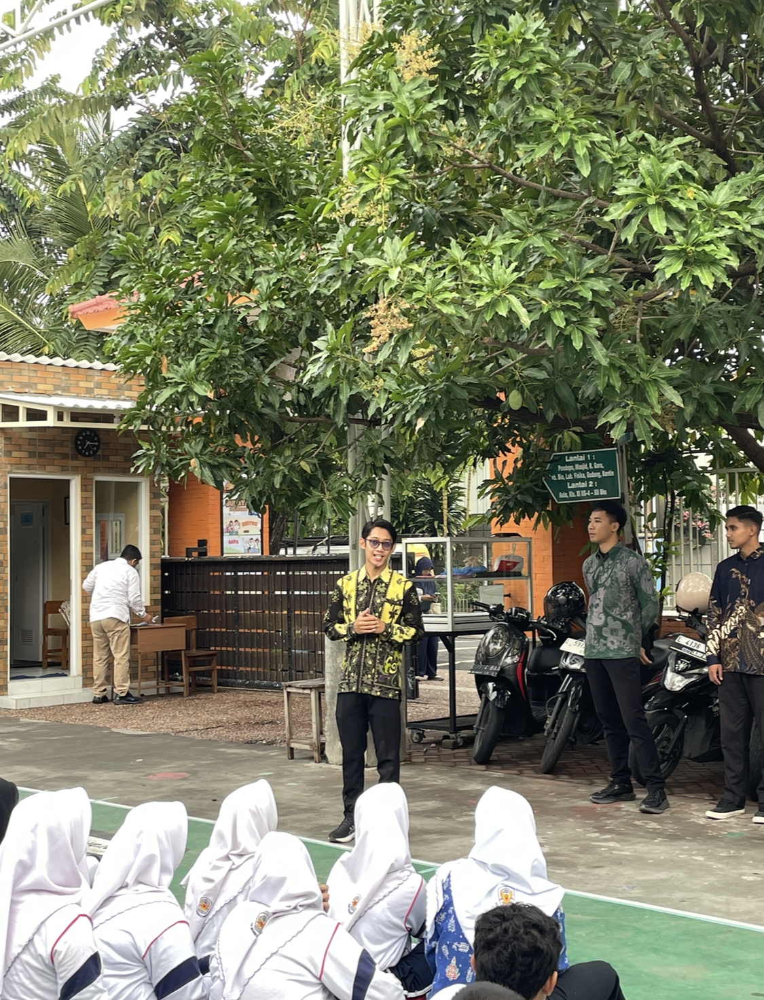
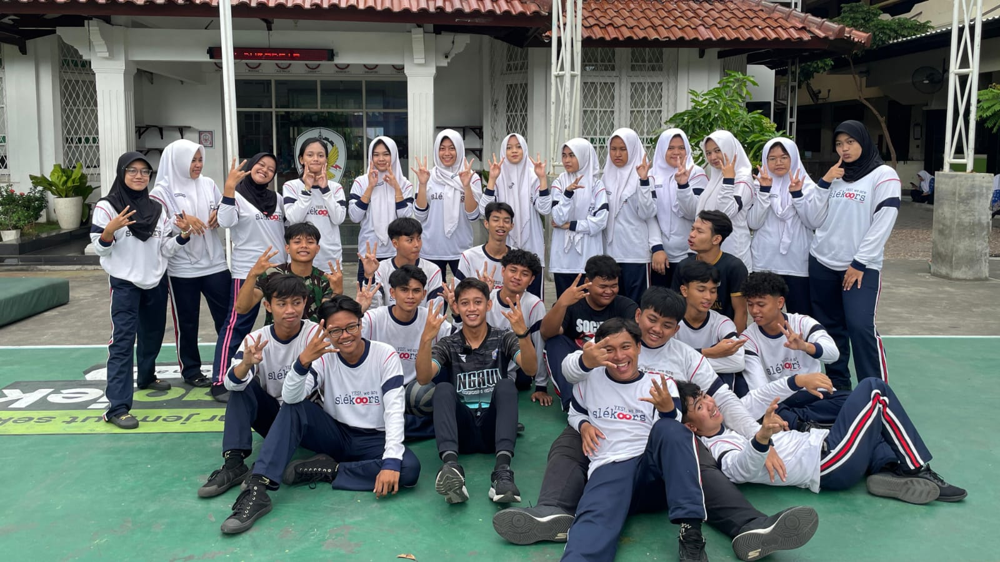

Tentang Saya
Profil Mahasiswa
Nafkhan Fitra Hafidhi
Biodata Mahasiswa
Daerah Asal
Kabupaten Ngawi unik karena letaknya di perbatasan Jawa Timur–Jawa Tengah, memadukan budaya khas. Ikonnya Benteng Van Den Bosch dan Tempuran Ngawi. Dikenal sebagai lumbung padi, serta memiliki wisata alam indah seperti Air Terjun Srambang dan Kebun Teh Jamus.
Tujuan
Tujuan guru di masa sekarang adalah tidak hanya menyampaikan materi, tetapi juga membentuk karakter dan keterampilan abad ke-21 seperti berpikir kritis, kreatif, kolaboratif, dan komunikatif. Guru berperan sebagai fasilitator yang mampu memanfaatkan teknologi serta menanamkan nilai-nilai Pancasila dalam kehidupan sehari-hari. Selain itu, guru harus memahami perbedaan karakteristik siswa melalui pembelajaran yang inklusif dan berdiferensiasi. Di masa yang akan datang, tujuan guru berkembang menjadi pembimbing (mentor) yang membantu siswa menyaring informasi dan beradaptasi dengan perkembangan teknologi. Guru juga berperan menumbuhkan sikap pembelajar sepanjang hayat. Dengan demikian, guru diharapkan mampu menciptakan generasi yang cerdas, berkarakter, dan siap menghadapi perubahan zaman.
Motivasi
Motivasi menjadi guru yang berkesan serta membangun pemikiran kedepan. Menjadi guru bukan sekadar profesi, tetapi panggilan untuk membentuk masa depan. Motivasi menjadi guru yang berkesan lahir dari kesadaran bahwa setiap kata, sikap, dan tindakan kita dapat meninggalkan jejak dalam kehidupan siswa. Guru yang bermakna bukan hanya menyampaikan materi, tetapi juga menanamkan nilai, membangun karakter, dan menginspirasi semangat belajar sepanjang hayat.Untuk membangun pemikiran ke depan, guru perlu terus berkembang, adaptif terhadap perubahan zaman, serta melek teknologi dan sosial. Pendidikan hari ini tidak lagi hanya berfokus pada pengetahuan, tetapi juga pada kreativitas, kolaborasi, dan kemampuan berpikir kritis. Oleh karena itu, guru harus menjadi pembelajar sejati yang terbuka terhadap inovasi.Dengan semangat itu, guru dapat menjadi agen perubahan yang mampu menciptakan generasi yang cerdas, berakhlak, dan siap menghadapi tantangan masa depan. Guru yang berkesan adalah mereka yang tidak hanya mengajar, tetapi juga menghidupkan harapan.
Hasil Karya
Artefak Pembelajaran
Evaluasi Diri
Refleksi Pembelajaran
Analisis & Refleksi Produk Pembelajaran
Kekuatan
Produk pembelajaran yang dihasilkan telah mengintegrasikan teknologi dengan baik dan mampu meningkatkan partisipasi aktif peserta didik dalam proses belajar mengajar.
Area Pengembangan
Perlu peningkatan dalam aspek diferensiasi konten untuk mengakomodasi keberagaman gaya belajar dan kemampuan awal peserta didik yang berbeda-beda.
Rencana Tindak Lanjut
Mengembangkan variasi strategi asesmen dan memperkaya media pembelajaran berbasis proyek untuk mendorong kolaborasi dan kreativitas siswa.
Evaluasi Kinerja
Penilaian Guru Pamong
Siklus
1
Rata-rata
81.7
Siklus
2
Rata-rata
86.3
Siklus
3
Rata-rata
91.7
Visi Profesional
Model Guru yang Dituju
Guru Penggerak
Menjadi motor perubahan yang menginspirasi rekan sejawat dan komunitas pendidikan.
Reflektif & Adaptif
Selalu merefleksikan praktik mengajar dan beradaptasi dengan kebutuhan zaman.
Berpihak pada Murid
Menempatkan kebutuhan dan perkembangan peserta didik sebagai prioritas utama.
Inovatif & Kolaboratif
Mengembangkan inovasi pembelajaran dan berkolaborasi untuk kemajuan pendidikan.
"Belajar bukan tentang cepat, tapi konsisten; setiap usaha kecil hari ini membangun masa depan yang lebih baik"
-Nafkhan Fitra Hafidhi-
Dokumentasi
Galeri Foto dan Video
Video Praktik Pembelajaran (YouTube)
**






Mari Terhubung
Hubungi Saya
Alamat Mengajar
SMAN 21 Surabaya
Telepon
085726415637
nafkhanfitra@gmail.com